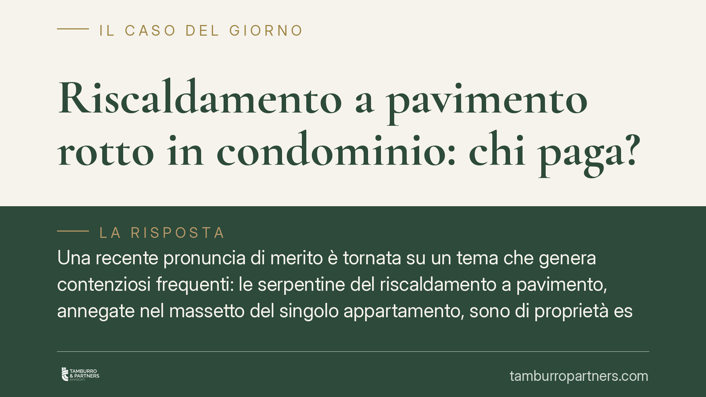

Riscaldamento a pavimento rotto in condominio: chi paga?
Una recente pronuncia di merito è tornata su un tema che genera contenziosi frequenti: le serpentine del riscaldamento a pavimento, annegate nel massetto del singolo appartamento, sono di proprietà esclusiva del condomino. Ne discende che costi di riparazione e responsabilità per i danni gravano sul proprietario, non sul condominio. Vediamo perché e cosa comporta in pratica.

Il caso
Il riscaldamento a pavimento funziona grazie a tubazioni (le cosiddette serpentine) posate sotto il massetto di ciascun appartamento, in cui circola acqua calda. Quando una serpentina si rompe, le conseguenze tipiche sono due: il costo per individuare la perdita e ripristinare l'impianto, spesso rilevante perché impone la rottura della pavimentazione, e i danni da infiltrazione all'unità sottostante.
La domanda ricorrente è se tali costi ricadano sul singolo o sull'intero condominio. Una recente pronuncia di merito — i cui estremi sono in corso di verifica e andranno confermati prima della citazione puntuale — ha ribadito un principio consolidato: il tratto d'impianto a servizio esclusivo di una sola unità appartiene al relativo proprietario.
Inquadramento normativo
Il punto di partenza è l'art. 1117 c.c., che elenca le parti comuni dell'edificio. Al n. 3 include gli impianti per i vari servizi (tra cui il riscaldamento) fino al punto di diramazione verso i locali di proprietà esclusiva. La norma fissa così un confine: ciò che serve la collettività è comune, ciò che serve una singola unità è esclusivo.
Il criterio decisivo non è tanto la collocazione fisica quanto la destinazione funzionale. La giurisprudenza di legittimità ha più volte chiarito che l'attribuzione di una parte alla sfera comune dipende dalla sua oggettiva destinazione al servizio collettivo. Centrale termica e colonne montanti servono tutti i condomini e restano comuni; le serpentine che riscaldano un solo appartamento servono quella sola unità e sono perciò esclusive, anche se materialmente poste sotto un massetto che fa parte della struttura.
Responsabilità per i danni: l'art. 2051 c.c.
Sul versante risarcitorio opera l'art. 2051 c.c., che addossa la responsabilità per i danni al custode della cosa. Il custode è chi ha il potere di governo e controllo sul bene: per le serpentine del proprio pavimento, è il condomino proprietario.
La norma introduce una presunzione di responsabilità: chi subisce il danno deve provare solo il nesso tra la cosa in custodia e il pregiudizio, mentre spetta al custode liberarsi dimostrando il caso fortuito, cioè un fattore esterno, imprevedibile e inevitabile, che ha interrotto il nesso causale. È un onere probatorio non banale: l'usura o un vizio dell'impianto non costituiscono, di regola, caso fortuito.
Resta però spazio per un eventuale concorso dell'installatore o dell'appaltatore quando la rottura dipenda da un vizio costruttivo o di posa. In tal caso il proprietario, pur rispondendo verso il danneggiato come custode, può agire in rivalsa verso chi ha realizzato l'impianto, nei limiti e nei termini di prescrizione previsti per i vizi d'opera.
Implicazioni pratiche
Per il condomino proprietario il quadro è chiaro: la rottura della propria serpentina è un problema che grava su di lui, sia per il ripristino sia per i danni causati ai vicini. Non può ribaltare la spesa sul condominio invocando la natura comune dell'impianto termico, perché il confine della comunione si arresta al punto di diramazione.
Per l'amministratore vale un principio speculare di cautela. Di fronte a una richiesta del condominio di intervenire o anticipare costi su un tratto esclusivo, deve resistere: impegnare risorse comuni per riparazioni di competenza individuale espone a contestazioni e a profili di responsabilità gestoria. L'amministratore dovrà invece coordinarsi quando il danno coinvolge parti comuni o più unità, distinguendo con rigore le sfere di competenza.
Cosa fare in concreto
- Verificate il confine proprietario: individuate dove termina l'impianto comune (centrale termica, colonne montanti) e dove inizia la diramazione a servizio della singola unità. È lì che si sposta la responsabilità.
- Documentate la perdita: fate redigere una relazione tecnica che localizzi il guasto e ne indichi la causa (usura, vizio di posa, evento esterno). Serve sia per la riparazione sia per un'eventuale rivalsa.
- Attivate la copertura assicurativa: controllate la polizza della casa e l'eventuale garanzia globale fabbricato, verificando massimali e clausole su danni da acqua condotta.
- Valutate la rivalsa verso l'installatore: se emerge un difetto costruttivo, agite tempestivamente, perché i termini per far valere i vizi d'opera sono brevi e decorrono dalla scoperta.
- Tenete separate le competenze: come amministratori, non anticipate con fondi comuni spese relative a tratti esclusivi senza delibera idonea e senza una chiara base giuridica.
La regola di fondo è semplice: paga chi ha il controllo sulla cosa. Ma la sua applicazione concreta richiede di ricostruire con precisione il tratto d'impianto interessato e la causa del guasto, perché da questi due elementi dipendono sia la ripartizione dei costi sia l'eventuale azione verso terzi.
---
Contributo informativo a cura di Tamburro & Partners Avvocati. Non costituisce parere legale.
Ogni condominio ha una storia a sé.
Se gestisci un'amministrazione e vuoi un confronto su una specifica questione condominiale, scrivi allo studio. Ti rispondiamo entro un giorno lavorativo.